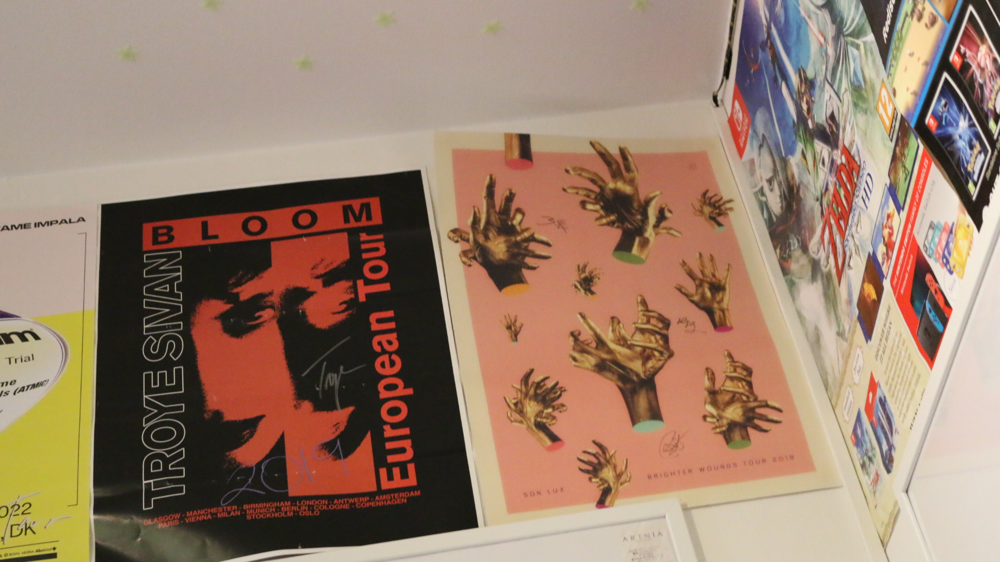
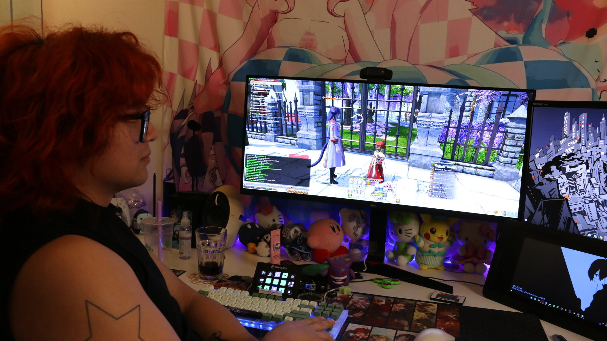
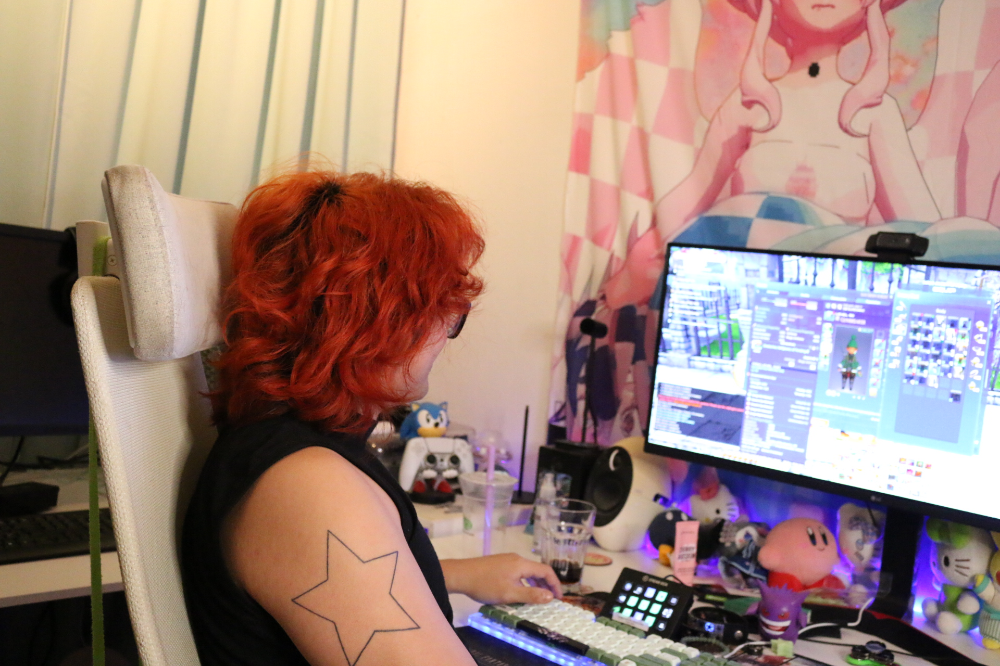
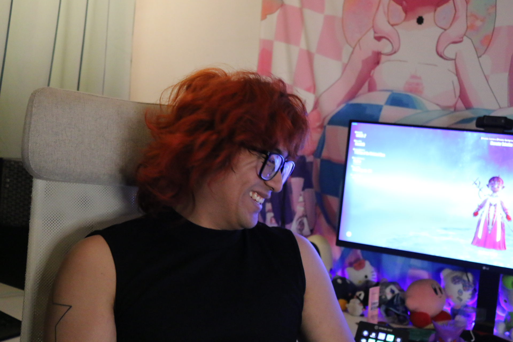
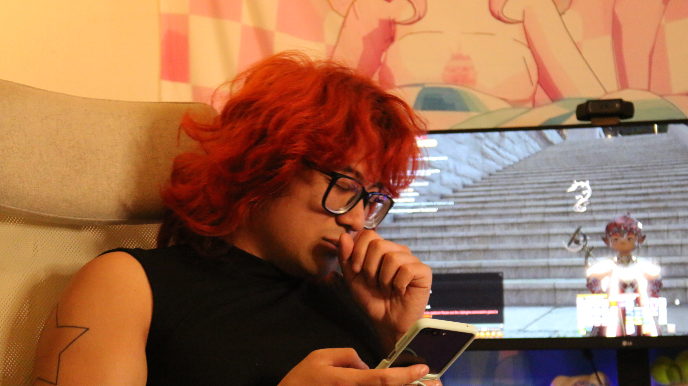
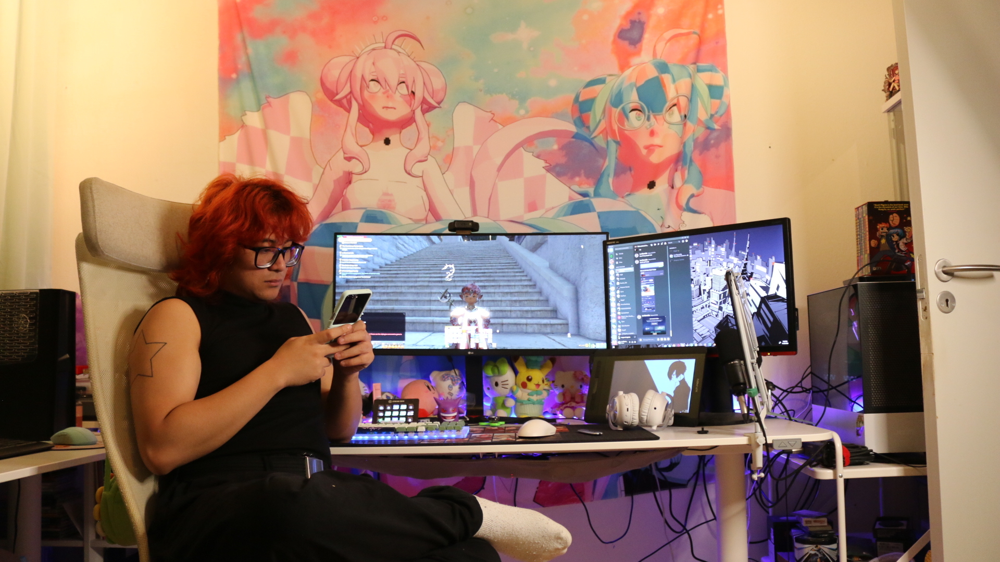
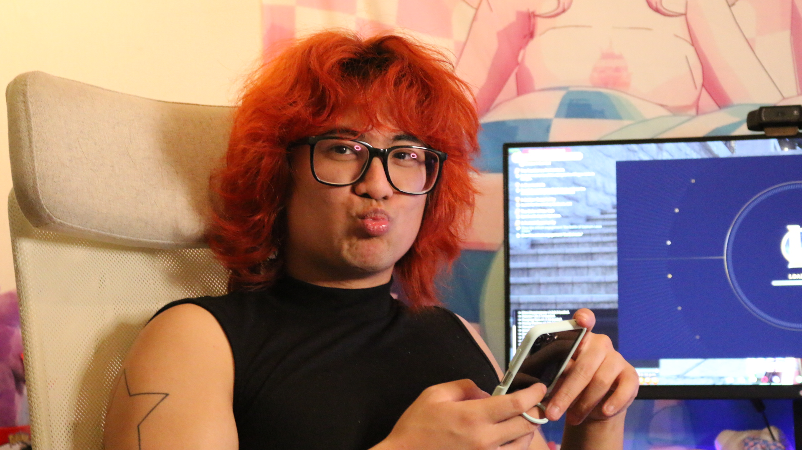
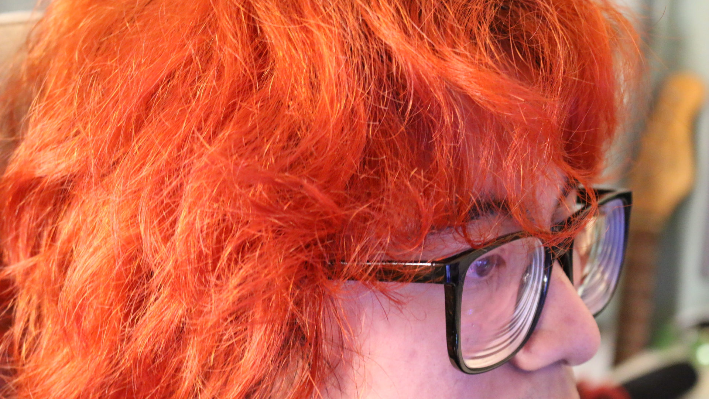

En person med en passion
Final Fantasy XIV
Interviewperson: Mark Anthony Aquino
Interviewet
Her ovenover kan du se interviewet med Anthony i både YouTube-format og i normal video-format!
Vi har været ude og interviewe Kimberly's kammerat Anthony, som godt kan lide at spille
Final
Fantasy 14. Det er ét af de spil som han har spillet allermest her for tiden. Han har spillet det
i
lidt over 2 år, og har godt og vel over 3000 timer i spillet. Derfor tænkte vi at det ville være
en
fed
idé at interviewe ham omkring det.

Galleri





